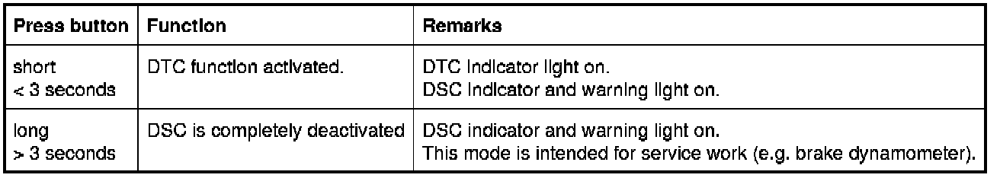

Part 2
34 01 05 (126)
Dynamic Stability Control 8Plus
E60, E61, E63, E64, E83, E90, E91, E92

New functions for DSC:
Brake Standby through pre-tensioning of the brakes in an emergency
Pre-tensioning the brakes shortens the brakes' response time.
If the accelerator pedal is rapidly released (accelerator pedal angle), the brakes are immediately pretensioned.
DSC generates a low brake pressure without a measurable deceleration taking place.
The clearance between the brake pads and brake discs is eliminated. If the brakes are not applied within half a second, the brake pressure that was generated early is reduced again. The pre-tensioning of the brakes depends is active at speeds greater than 70 km/h.
Brake disc drying on wet roads
Braking dry removes moisture that gathers on the brake discs during journeys on wet roads or in rain.
The brake pads are lightly applied. This function also shortens the brakes' response time.
Depending on the signal from the rain sensor and the position of the wiper switch, DSC cyclically generates a low brake pressure. This creates no measurable deceleration on the vehicle. The brake pads are cyclically applied. This means that the brake disc are regularly wiped down. How often and how long the brake pads are applied depends on:
- The intensity of the rain, e.g. the speed of the windscreen wiper
- Road speed greater than 70 km/h
Fading compensation
Fading means: braking effect deteriorates as a result of high brake-disc temperatures.
If fading is detected, DSC reacts by increasing the brake pressure above that specified by the driver.
At very high brake-disc temperatures, fading compensation is indicated by the following:
- General brake warning lamp lighting up yellow
- Check-Control symbol in LCD display in instrument cluster lighting up yellow
(not E83)
DSC detects fading as follows: DSC compares the current vehicle deceleration with a nominal value based on the current brake pressure.
DSC increases brake pressure until the nominal deceleration is achieved or until all wheels are subject to ABS control. The process is ended when the brake pedal is no longer depressed or when the speed drops below a certain threshold.
Soft stop when braking to standstill (not on BMW 3-Series all-wheel drive or E83)
Soft stop prevents the vehicle from jolting to a stop (e.g. with an inexperienced driver).
When the vehicle is braked to a standstill, there is no uncomfortable jerk (causing the occupants to "lurch" forward). DSC calculates the moment that standstill can be expected from the current road speed and deceleration.
Just before standstill is achieved, the brake pressure on the rear axle is reduced so that the vehicle stops with practically no jerking.
Soft stop is only active for light braking, so that the shortest possible stopping distance can still be achieved in emergency braking situations.
Start-off assistant
When pulling away on a slope, it is necessary to move your foot from the brake pedal to the accelerator pedal. The start-off assistant prevents the vehicle from rolling downhill in the following situations:
- uphill in forward gear
- uphill in reverse gear
It does this by maintaining the brake pressure needed to hold the vehicle. The gradient is recorded by the longitudinal-acceleration sensor in the DSC control unit.
The braking torque and engine torque needed is calculated from the gradient. When pulling away is detected, brake pressure is reduced as soon as the available engine torque is sufficient to move the vehicle in the direction required. The start-off assistant is deactivated when the parking brake is applied. If no move is made to pull away within 2 seconds of the brake pedal being released, the start-off assistant will be deactivated.
Familiar functions for DSC:
DSC: Dynamic Stability Control
Dynamic Stability Control (DSC) detects the current status of the vehicle by evaluating the sensor signals.
This status is compared with the nominal values derived from a computational model.
In this way, the system recognizes incipient instabilities.
The vehicle is stabilized as soon as a deviation overshoots the control threshold stored in the DSC control unit. Stabilization (within the limits imposed by the laws of physics) is achieved by reducing engine power and by braking individual wheels.
DSC actions are superimposed on the ABS and ASC functions.
The DSC function can be deactivated by means of the DTC button.
ABS: Anti-lock braking system
The anti-lock braking system (ABS) stops the wheels locking during braking.
Advantage: Shorter stopping distances, the car retains its directional stability and remains steerable.
Brake pressure is regulated at all wheels to ensure that each wheel runs in the best possible slip range.
When this happens, slip is controlled so that the maximum possible braking and lateral stability forces can be transmitted.
ABS alone is available for braking if a sensor for DSC fails or if a bus fault occurs (PT-CAN and chassis CAN). ABS is the surviving safety function in circumstances in which DSC control is no longer possible.
EBV: Electronic brake force distribution
Electronic brake force distribution (EBV) is a component of the ABS. EBV regulates the brake force distribution between the front and rear axles, depending on vehicle load.
Advantage: Regardless of the load state of the vehicle, the best possible braking distance is achieved while driving stability is maintained. The brake pads wear more evenly.
If the ABS fails, the EBV function is sustained for as long as possible.
The signals from at least two wheel-speed sensors are needed for the EBV function.
CBC: Cornering brake control
Cornering brake control (CBC) is an extension of ABS. CBC increases driving stability when the brakes are applied as the car corners ("cornering logic").
Advantage: Optimum driving stability if brakes are partially applied when cornering.
The shift in wheel loads as the car corners (the onset of this phenomenon requires no more than light application of the brakes) can result in a reduction in handling stability. If required, CBC generates a stabilizing load moment when the brakes are applied lightly outside the ABS intervention range.
DTC: Dynamic traction control
DTC is a version of DSC that has been optimized for forward momentum in certain road conditions.
Dynamic traction control (DTC) offers better traction as a trade-off against a reduction in stability in some circumstances. Consequently, its use should be reserved for exceptional conditions. It is advisable to briefly activate DTC in the following exceptional circumstances:
- To rock the vehicle free or pull away in deep snow or on a loose surface.
- When driving on snowy uphill stretches, in slush and on roads that have not been cleared
- When driving with snow chains.
The DTC function approximates to that of DSC with a slightly modified control strategy.
DTC can be activated by deactivating DSC (DTC button). DTC intervenes in the braking actions to imitate the function of a conventional differential lock. This effect of this is to increase the input torque on those wheels that are on a higher-friction surface.
Advantage: Higher traction is available with DTC.
Vehicle stabilization intervention (e.g. reduced power output) is made slightly later than with DSC. In certain situation, the driver has to intervene more intensively himself to stabilize the vehicle.
ASC: Automatic stability control
Automatic stability control (ASC) prevents the wheels spinning during acceleration by intervention in brake and engine operations.
Advantage: More traction and better driving stability.
If the wheels on the driven axle have a different level of grip, the wheel that tends to spin is braked. If necessary, the engine's power output is also reduced.
MSR: Engine drag torque control
The engine drag torque control (MSR) counteracts the tendency of the wheels to lock on smooth surfaces. The engine's drag torque generated by downshifts or abrupt load changes can lock the driven wheels (especially on surfaces with a low coefficient of friction).
The wheel-speed sensors tell MSR as soon as the wheels are about to lock. MSR then briefly reduces the engine's drag torque by opening the throttle slightly.
Advantage: The drive wheels retain their lateral stability in overrun mode.
DBC: Dynamic brake control
Dynamic brake control (DBC) assists in emergency braking situations by automatically increasing the brake pressure.
Advantage: Shortest possible braking distances in emergency braking situations by achieving ABS regulation on all four wheels.
The brake pedal is frequently not depressed strongly enough in emergency braking situations. ABS regulation is then not activated.
In the following situations, the return pump increases the brake pressure until ABS regulation is activated:
- When the brake pedal is rapidly depressed with insufficient pedal force
- When the brake pedal is depressed slowly and the demand for deceleration is subsequently high, after one wheel reaches the ABS control threshold.
Which wheel locks first depends on load and coefficient of friction of the road surface.
Example of a typical situation:
The traffic slows, making light braking necessary at first, but then demands as short a stopping distance as possible.
Trailer stabilization control
Trailer stabilizing control detects when a trailer is rocking about its vertical axis. The system functions at a speed of about 65 km/h when the trailer socket is in use.
With the aid of the DSC sensors, Dynamic Stability Control (DSC) monitors the vehicle's yaw behavior.
If the trailer's rocking motion exceeds the limit, the engine output is reduced. In addition, DSC brakes all four wheels automatically.
If DSC is deactivated or faulty, then the trailer stabilizing control does not work either.
HDC: Hill Descent Control
Hill descent control (HDC) is an automatic cruise control system on all-wheel-drive vehicles for driving downhill.
HDC automatically reduces the vehicle's speed. The brakes are applied on all four wheels to reduce road speed to just above walking pace. This allows stable downhill driving on steep and slippery surfaces.
HDC holds this speed constant (all DSC functions remain active).
The vehicle's road speed can be continuously varied within the specified values by depressing the accelerator pedal and brake pedal or the cruise-control system steering-column stalk.
> E60, E61
HDC can be switched on and off at the Central Information Display (CID): "Settings" menu and "Vehicle settings" submenu.
At the factory, HDC is assigned to the lower freely programmable button on the multi-function steering wheel.
> E83 and E90, E91, E92
HDC can be activated and deactivated via a separate button in the SZM (center console switch cluster).
Electronically controlled deceleration
The electronically controlled deceleration (ECD) reacts to a demand from Active Cruise Control (ACC).
When the ACC system requires deceleration, DSC responds by applying the disc brakes on all four wheels (maximum rate of retardation 2.5 m/s2).
When the car is on a decent with the speed preset by the driver, ECD automatically applies the brakes in order to keep the car's speed constant at the preset value.
When the brakes are applied automatically in this way, the bake lights are activated in accordance with the requirements of road-safety legislation.
The light module does not activate the brake lights unless the vehicle's rate of deceleration is greater than 1m/s2. This prevents the brake lights from flickering on and off.
All-wheel control
Dynamic Stability Control (DSC) specifies the nominal value for xDrive all-wheel control. The DSC control unit calculates the locking moment for the multi-plate clutch in the transfer box.
The nominal value depends on the vehicle's tendency to oversteer or understeer and wheelslip. The nominal value is sent via the PT-CAN to the VTG control unit.
The VTG control unit reports the actual set locking moment back to the DSC control unit.
The DSC control unit calculates the locking torque for the multi-plate clutch as follows:
- Pre-activation = driver's command
- Driving dynamic control
- Detection of different tire rolling circumferences
[for further information, please refer to SI Technology (SBT) 27 01 05 128]
RPA: Run Flat Indicator
The Run Flat Indicator (RPA) is not a dynamic driving control function.
RPA is integrated into the DSC control unit as 4 wheel-speed signals are needed for this function.
By comparing the speed signals for all four wheels, the system detects differences in rolling circumference at the individual wheels. This enables a gradual drop in pressure to be detected.
[for further information, please refer to SI Technology (SBT) 36 01 04 078] Run Flat Indicator All Models
CBS: Condition Based Service
CBS is not a driving dynamic function.
Condition Based Service, as the name suggests, is a means of ensuring that the car is serviced as and when necessary. CBS comprises various maintenance operations, e.g. engine oil, spark plugs and brake pads.
The remaining distance for the front and back brake pads are calculated separately in the DSC control unit.
When making the calculation, the condition of the brake pad wear sensors is taken into account (reference point at 6 mm and 4 mm).
[for further information, please refer to SI Technology (SBT) 00 01 04 070]
Operation
> - E60, E61, E63, E64 and E83
The DTC button is located in the center console switch cluster (SZM).
> - E90, E91, E92
The DTC button is located between the central air vents in the instrument panel.
The DTC button has 2 functions that can be set by pressing the button for different lengths of time.

Note: Reactivating DSC
Briefly pressing the button again reactivates the DSC function. The DSC indicator and warning light goes out (unless a fault has developed in the system).
If the DTC button is pressed for longer than 10 seconds (e.g. by a handbag on the center console), DSC will recognize an operating error. The DSC function remains active and cannot be deactivated until the ignition has been switched off and on again.
Preconditions for activation
DSC is in ready mode after each engine start.
Notes for service staff
The following information is available for service staff:
- General information:
- Diagnosis:
- Encoding/programming:
Subject to change.